图的基本概念
图的定义
图 由 顶点集 和 边集 组成，记为，其中 表示图中顶点的有限非空集； 表示图中顶点之间的关系（边）集合。
- ，用 示图 G 中顶点的个数，也称图的阶
- ，用 表示图 G 中边的条数。
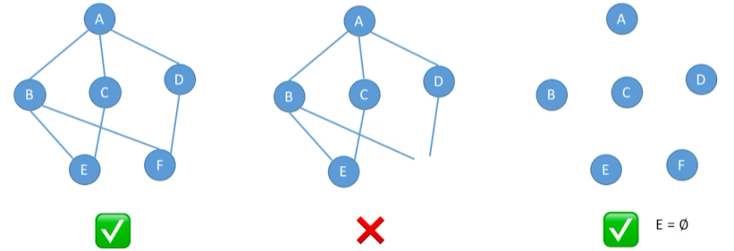
Tip
经性表可以是空表，树可以是空树，但图不可以是空图。
即图中不能一个顶点也没有，图的顶点集一定非空，但边集可以为空，此时图中只有顶点而没有边。
无向图、有向图
-
无向图
若 E 是无向边（简称边）的有限集合时，则图 G 为无向图。
边是顶点的无序对，记为 或 ，因为 ，其中是顶点。
可以说顶点和顶点互为邻接点。边依附于顶点和，或称边和顶点相关联。
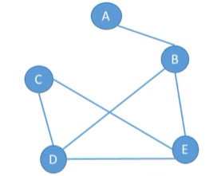
-
有向图
若 E 是有向边（也称弧）的有限集合时，则图 G 为有向图。
弧是顶点的有序对，记为 ，其中是顶点，称为弧尾，称为弧头，称为从顶点到顶点的弧，也称邻接到，或邻接自。
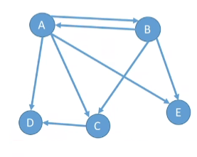
简单图、多重图
-
简单图
- 不存在重复边；
- 不存在顶点到自身的边；
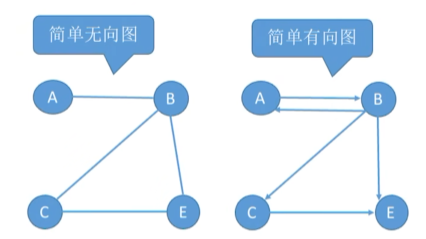
-
多重图
图 G 中某两个顶点之间的边数大于 1 条，又允许顶点通过一条边和自身关联。
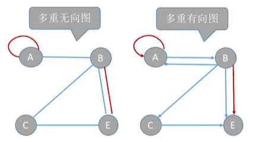
Tip
数据结构中仅讨论简单图。
路径、路径长度、回路、距离
-
路径
顶点到顶点之间的一条路径，是指顶点序列，。
-
路径长度
路径上边的数目。
-
回路
第一个顶点和最后一个顶点相同的路径称为回路或环。若一个图有 n 个顶点，并且有大于 n-1 条边，则此图一定有环。
- 图是一个环： 当说一个图是一个环时，意味着整个图的结构是一个环。换句话说，图中的所有顶点都可以按照一定的方式连接成一个闭合的环，每个顶点都与它相邻的两个顶点相连。这种情况下，整个图可以被看作一个环的扩展，每个顶点都是环中的一个节点，每条边都是环中的一条边。
- 图存在一个环： 当说一个图存在一个环时，意味着在这个图中存在一个封闭的路径，这个路径可以回到起始顶点，形成一个环。这个环可能是图中的一个子集，而不一定涵盖所有的顶点。换句话说，图中的某些顶点和边组成了一个闭合路径，形成了一个环，但是这个环不一定包括图中的所有顶点。
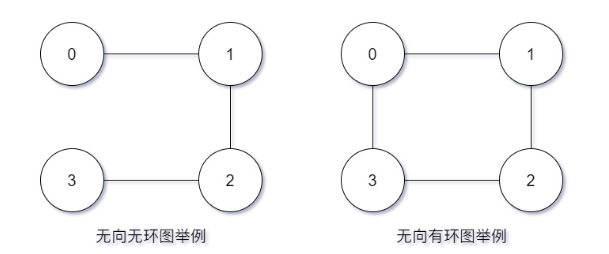
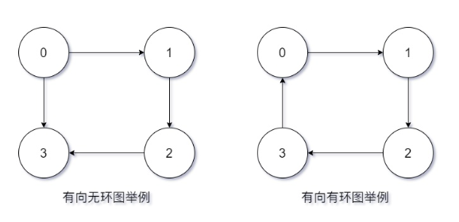
-
简单路径
在路径序列中，顶点不重复出现的路径称为简单路径。
回路不是简单路径
-
简单回路
除第一个顶点和最后一个顶点外，其余顶点不重复出现的回路称为简单回路。
-
点到点的距离
从顶点出发到顶点的最短路径若存在，则此路径的长度称为从到的距离。若从到根本不存在路径，则记该距离为无穷（）。
子图
设有两个图和
-
若是的子集，且是的子集，则称是的子图。
-
若有满足 的子图，则称其为的生成子图。
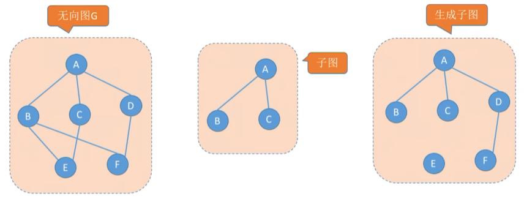
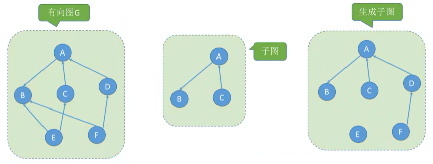
Tip
并非和的任何子集都能构成的子图，因为这样的子集可能不是图，即的子集中的某些边关联的顶点可能不在这个的子集中。
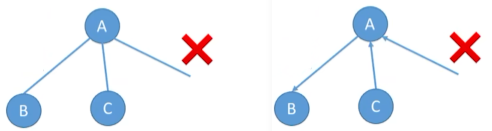
连通 、连通图 、连通分量
Tip
在无向图中讨论连通性，在有向图中讨论强连通性。
-
连通
在无向图中，若从顶点到顶点有路径存在，则称和是连通的。
-
强连通
在有向图中，如果有一对顶点和，从到和从到之间都有路径，则称这两个顶点是强连通的。
-
连通图
若图中任意两个顶点都是连通的，则称图为连通图，否则称为非连通图。

常见考点
对于 n 个顶点的无向图
- 若是连通图，则最少有 条边；
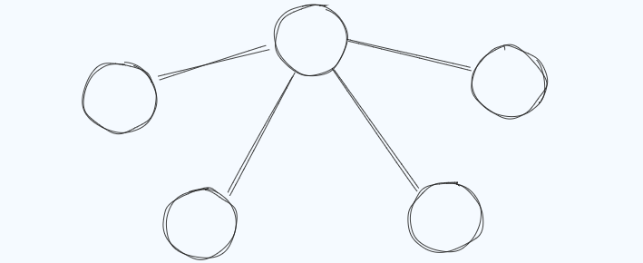
-
若是非连通图，则最多可能有条边；
除去一个顶点，剩下顶点两两相连
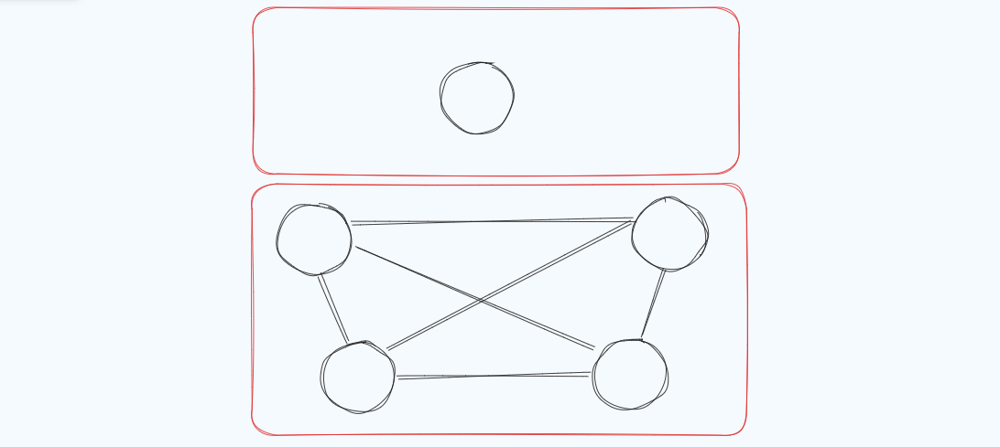
-
强连通图
若图中任何一对顶点都是强连通的，则称此图为强连通图。
常见考点
对于 n 个顶点的有向图，若 G 是强连通图，则最少有 n 条边（形成回路）
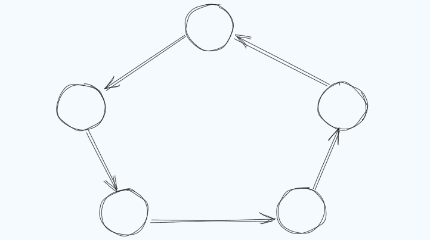
-
连通分量
无向图中的极大连通子图称为连通分量。
极大连通子图
子图必须连通，且包含尽可能多的顶点和边。
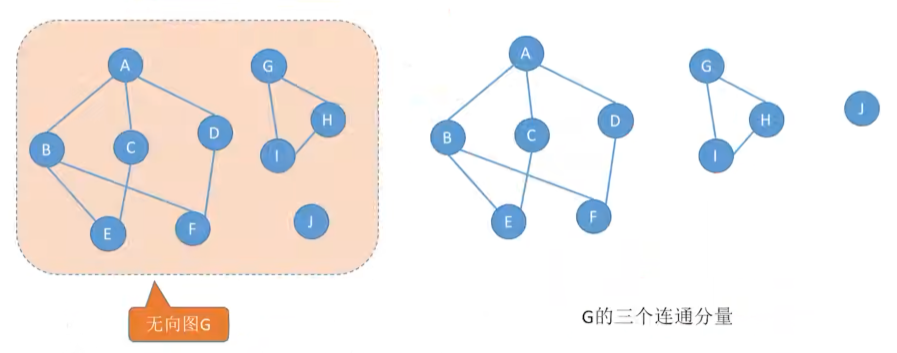
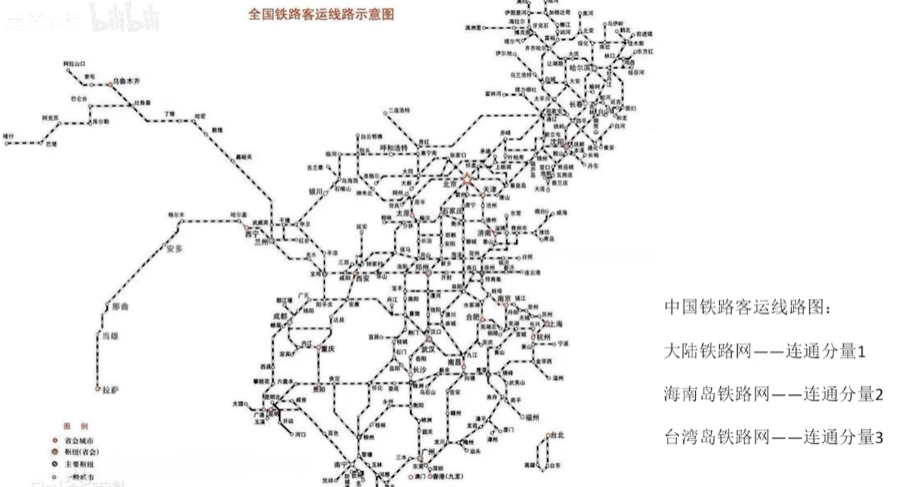
-
强连通分量
有向图中的极大强连通子图称为有向图的强连通分量。
极大强连通子图
子图必须强连通，同时保留尽可能多的边。
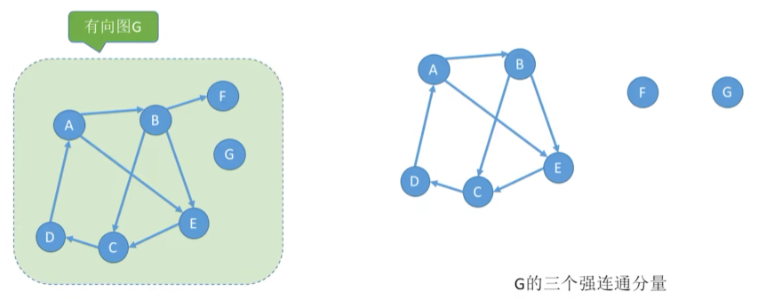
生成树、生成森林
-
生成树
连通图的生成树是包含图中全部顶点的一个极小连通子图。
若图中顶点数为 n，则它的生成树含有 n-1 条边。包含图中全部顶点的极小连通子图，只有生成树满足这个极小条件，对生成树而言，若砍去它的一条边，则会变成非连通图，若加上一条边则会形成一个回路。
极小连通子图：边尽可能少，但要保持连通。
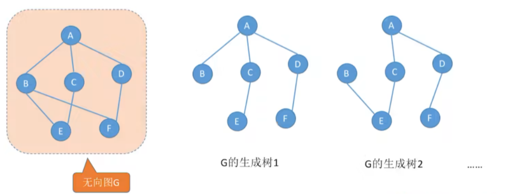
-
生成森林
在非连通图中， 连通分量的生成树构成了非连通图的生成森林。
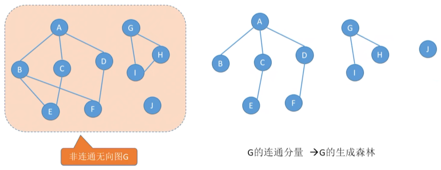
顶点的度、入度和出度
-
在无向图中
顶点的度是指依附于顶点 v 的边的条数，记为 TD(v)。
Note
对于具有 n 个顶点、e 条边的无向图，
即无向图的全部顶点的度的和等于边数的 2 倍，因为每条边和两个顶点相关联。
-
在有向图中
入度是以顶点为终点的有向边的数目，记为 ID(v)；
出度是以顶点为起点的有向边的数目，记为 OD(v)；
顶点的度等于其入度与出度之和，即 TD(v) = ID(v) + OD(v)。
性质
对于具有 n 个顶点、e 条边的有向图，
即有向图的全部顶点的入度之和与出度之和相等，并且等于边数，这是因为每条有向边都有一个起点和终点。
边的权、带权图/网
-
边的权
在一个图中，每条边都可以标上具有某种含义的数值，该数值称为该边的权值。
-
带权图/ 网
边上带有权值的图称为带权图，也称网。
-
带权路径长度
当图是带权图时，一条路径上所有边权值之和，称为路径的带权路径长度。
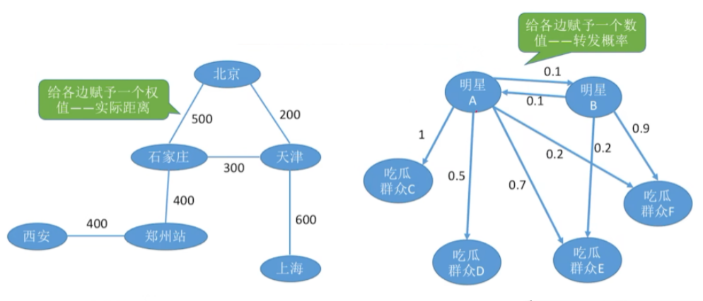
几种特殊形态的图
完全图
也称简单完全图
-
对于无向图
的取值范围为 0 到，有条边的无向图称为完全图，在完全图中任意两个顶点之间都存在边。
-
对于有向图
的取值范围为 0 到，有而条弧的有向图称为有向完全图，在有向完全图中任意两个顶点之间都存在方向相反的两条弧。
稠密图、稀疏图
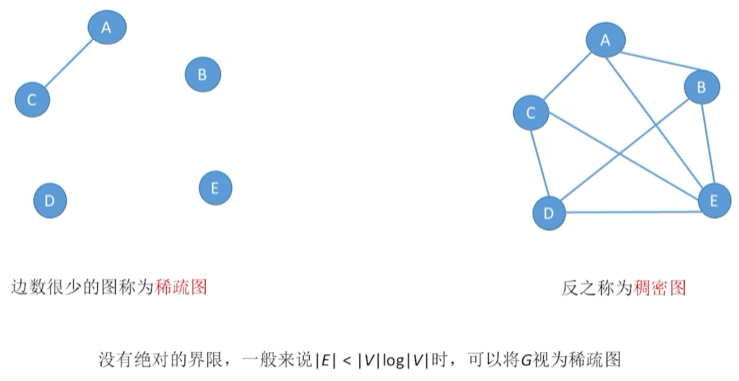
树
不存在回路，且连通的无向图
n 个顶点的树，必有 n-1 条边。
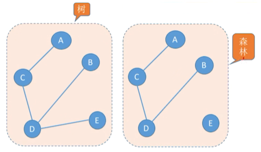
有向树
一个顶点的入度为 0，其余顶点的入度均为 1 的有向图，称为有向树。
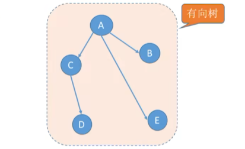
图的存储
邻接矩阵法
所谓邻接矩阵存储，是指用一个一维数组存储图中顶点的信息，用一个二维数组存储图中边的信息（即各顶点之间的接关系），存储顶点之间邻接关系的二维数组称为邻接矩阵。
结点数为的图的邻接矩阵是的。将的顶点编号为约。若，则，否则。
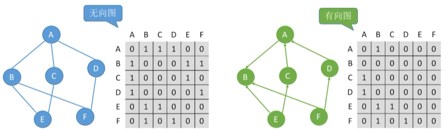
#define MaxVertexNum 100 // 顶点数目的最大值
typedef struct {
char Vex[MaxVertexNum]; // 顶点表
int Edge[MaxVertexNum][MaxVertexNum]; // 邻接矩阵，边表
int vexnum, arcnum; // 图的当前顶点数和边数/弧数
} MGraph;对于带权图而言，若顶点和之间有边相连，则邻接矩阵中对应项存放着该边对应的权值，若顶点和不相连，则通常用来代表这两个顶点之间不存在边。
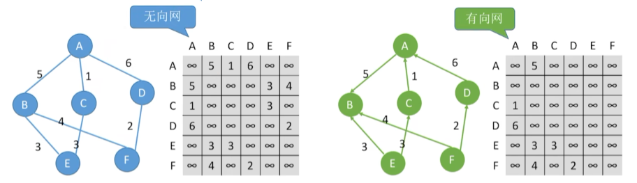
#include <climits>
#define MaxVertexNum 100 // 顶点数目最大值
#define INFINITY INT_MAX // 无穷
typedef struct {
char Vex[MaxVertexNum]; // 顶点表
int Edge[MaxVertexNum][MaxVertexNum]; // 边的权
int vexnum, arcnum; // 图的当前顶点数和边数/弧数
} MGraph;Tip
- 在简单应用中，可直接用二维数组作为图的邻接矩阵（顶点信息等均可省略）。
- 当邻接矩阵的元素仅表示相应边是否存在时，EdgeType 可采用
bool类型。
特点：
-
无向图的邻接矩阵一定是一个对称矩阵(并且唯一)。因此，在实际存储邻接矩阵时只需存储上(或下)三角矩阵的元素。
-
稠密图适合使用邻接矩阵的存储表示。
-
邻接矩阵表示法的空间复杂度为，其中 n 为图的顶点数，只和顶点数相关，和实际边数无关。
-
邻接矩阵求顶点的度/出度/入度的时间复杂度为
-
对于无向图，
第 个结点的度 = 第 行(或第 列)的非零元素的个数。
-
对于有向图，
- 第 个结点的出度 = 第 行的非零元素的个数。
- 第 个结点的入度 = 第 列的非零元素的个数。
- 第 个结点的度 = 第 行、第 列的非零元素的个数。
用邻接矩阵存储图，很容易确定图中任意两个顶点之间是否有边相连。但是，要确定图中有多少条边，则必须按行、按列对每个元素进行检测，所花费的时间代价很大。
-
-
设图的邻接矩阵为，的元素等于由顶点 到顶点 的长度为 的路径的数目。
Note
若用邻接矩阵存储有向图，矩阵中主对角线以下的元素均为零，则该图拓扑序列存在，但可能不唯一。
对角线以下的元素均为零，表明只有从顶点到顶点可能有边，而从顶点到顶点一定无边，即有向图是一个无环图，因此一定存在拓扑序列。
对于拓扑序列是否唯一，举例：设有向图的邻接矩阵为
则存在两个拓扑序列，因此该图存在可能不唯一的拓扑序列。
邻接表法
邻接表，是指对图中的每个顶点 建立一个单链表，第个单链表中的结点表示依附于顶点 的边（对于有向图则是以顶点 为尾的弧），这个单链表就称为顶点 的边表（对于有向图则称为出边表）。
边表的头指针和顶点的数据信息采用顺序存储（称为顶点表），所以在邻接表中存在两种结点：顶点表结点和边表结点。
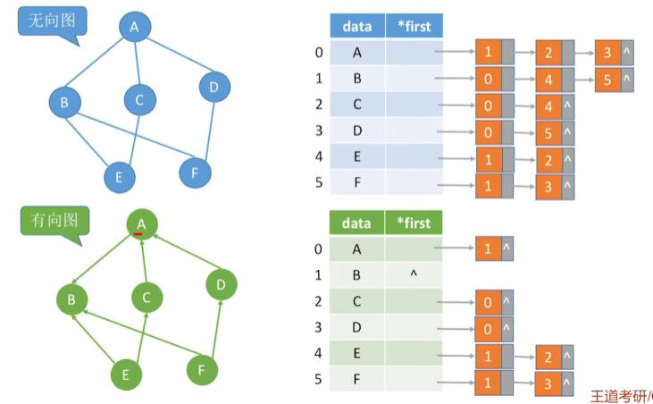
#define MaxVertexNum 100
// 边/弧
typedef struct ArcNode {
int adjvex;// 边/弧指向哪个结点
struct ArcNode *next;// 指向下一条弧的指针
// int info;// 可以储存边的权值
} ArcNode;
// 顶点
typedef struct VNode {
int data;/ / 顶点信息
ArcNode *first;// 第一条边/弧
} VNode, AdjList[MaxVertexNum];
// 用邻接表存储的图
typedef struct {
char Vex[MaxVertexNum]; // 顶点表
int Edge[MaxVertexNum][MaxVertexNum]; // 边的权
int vexnum, arcnum; // 图的当前顶点数和边数/弧数
} ALGraph;邻接表的特点：
-
- 若 G 为无向图，则所需的存储空间为；
- 若 G 为有向图，则所需的存储空间为；
前者的倍数 2 是由于无向图中，每条边在邻接表中出现了两次。
-
对于稀疏图，采用邻接表表示将极大地节省存储空间。
-
在邻接表中，给定一顶点，能很容易地找出它的所有邻边，因为只需要读取它的邻接表。 在邻接矩阵中，相同的操作则需要扫描一行，花费的时间为。
-
要确定给定的两个顶点间是否存在边，在邻接矩阵中可以立刻查到，而在邻接表中则需要在相应结点对应的边表中查找另一结点，效率较低。
-
在有向图的邻接表表示中， 求一个给定顶点的出度只需计算其邻接表中的结点个数；但求其顶点的入度则需要遍历全部的邻接表。
-
图的邻接表表示并不唯一，因为在每个顶点对应的单链表中，各边结点的链接次序可以是任意的，它取决于建立邻接表的算法及边的输入次序。
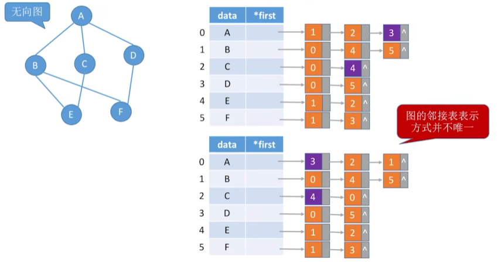
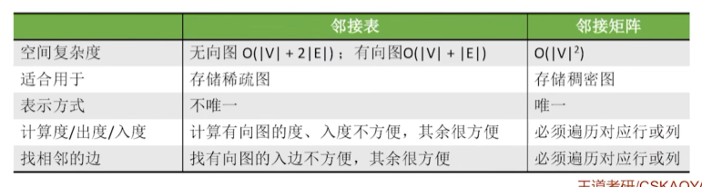
十字链表
Tip
只适用于存储有向图
十字链表是有向图的一种链式存储结构。在十字链表中，对应于有向图中的每条弧有一个结点，对应于每个顶点也有一个结点。
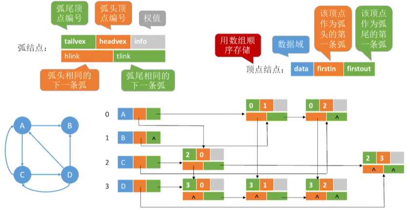
空间复杂度：
- 找到指定顶点的所有出边：顺着绿色线路找
- 找到指定顶点的所有入边：顺着橙色线路找
邻接多重表
Tip
只适用于存储无向图。
在邻接表中，容易求得顶点和边的各种信息，但在邻接表中求两个顶点之间是否存在边而对边执行删除等操作时，需要分别在两个顶点的边表中遍历，效率较低。
邻接多重表是无向图的另一种链式存储结构。
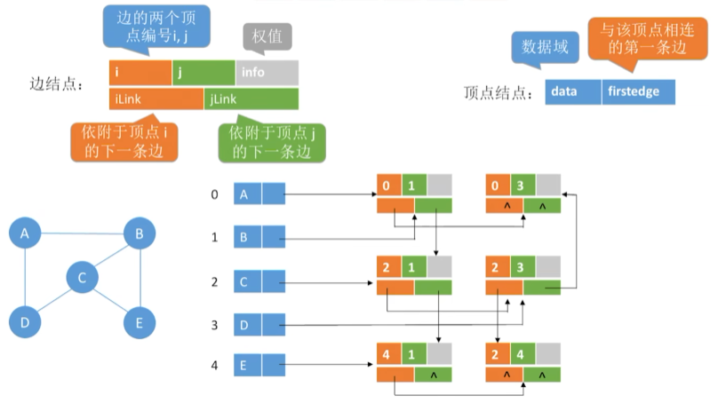
空间复杂度：
和十字链表相比较，
四种存储方式的区别
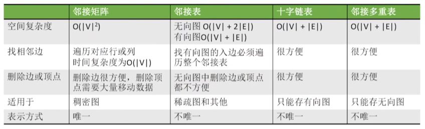
图的遍历
图的遍历是指从图中的某一顶点出发，按照某种搜索方法沿着图中的边对图中的所有顶点访问一次且仅访问一次。
树是一种特殊的图，所以树的遍历实际上也可视为一种特殊的图的遍历。
图的遍历算法是求解图的连通性问题、拓扑排序和求关键路径等算法的基础。
广度优先遍历(BFS)
Breadth-First-Search，BFS
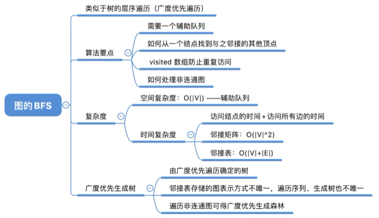
定义
类似于二叉树的层序遍历算法。
基本思想是：首先访问起始顶点 v，接着由 v 出发，依次访问 v 的各个未访问过的邻接顶点，然后依次访问的所有未被访问过的邻接顶点；再从这些访问过的顶点出发，访问它们所有未被访问过的邻接顶点，直至图中所有顶点都被访问过为止。若此时图中尚有顶点未被访问，则另选图中一个未曾被访问的顶点作为始点，重复上述过程，直至图中所有顶点都被访问到为止。
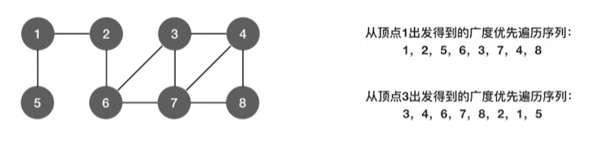同一个图的邻接矩阵存储表示是唯一的，因此广度优先遍历序列唯一。
- 同一个图的邻接表存储表示不唯一，因此广度优先遍历序列不唯一。
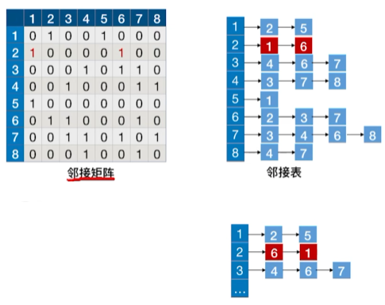
实现
要点：
- 找到与一个顶点相邻的所有顶点
- 标记哪些顶点被访问过
- 需要一个辅助队列
#define MaxVertexNum 100
bool visited[MaxVertexNum];// 访问标记数组，初始值为false
void BFS(Graph G, int v) {// 从顶点v出发，广度优先遍历图G
visit(v); //访问初始顶点v
visited[v] = true; // 标记为已访问
Enqueue(Q, v); // 顶点v入队列Q
while (!isEmpty(Q)) {
DeQueue(Q, v);// 顶点v出列
for (int w = FirstNeighbor(G, v); w >= 0; w = NextNeighbor(G, v, w)) {
// 检测v所有邻接点
if (!visited[w]) {// w为v尚未访问的邻接顶点
visit(w);// 访问顶点w
visited[w] = true;
EnQueue(Q, w);// 顶点w入队列
}
}
}
}如果是非连通图，只执行一次遍历是无法遍历完所有结点的
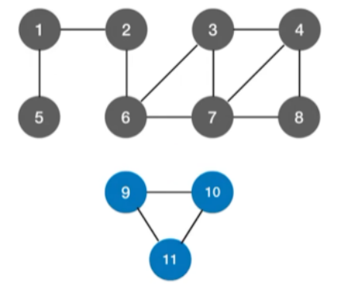
如需解决这个问题，只需遍历一遍访问标记数组，找到仍为 false 的顶点，继续执行 BFS 就行
#define MaxVertexNum 100
bool visited[MaxVertexNum];// 访问标记数组，初始值为false
void BFS(Graph G, int v) {// 从顶点v出发，广度优先遍历图G
visit(v); //访问初始顶点v
visited[v] = true; // 标记为已访问
Enqueue(Q, v); // 顶点v入队列Q
while (!isEmpty(Q)) {
DeQueue(Q, v);// 顶点v出列
for (int w = FirstNeighbor(G, v); w >= 0; w = NextNeighbor(G, v, w)) {
// 检测v所有邻接点
if (!visited[w]) {// w为v尚未访问的邻接顶点
visit(w);// 访问顶点w
visited[w] = true;
EnQueue(Q, w);// 顶点w入队列
}
}
}
}
void BFSTraverse(Graph G) {// 对图G进行广度优先遍历
for (int i = 0; i < G.vexnum; i++) {
visited[i] = false;// 访问标记数组初始化
}
InitQueue(Q);// 初始化辅助队列Q
for (int i = 1; i < G.vexnum; i++) {// 遍历
if (!visited[i]) {
BFS(G, i);// i结点未访问过，从i开始执行BFS
}
}
}复杂度
-
空间复杂度
无论是邻接表还是邻接矩阵的存储方式，BFS 算法都需要借助一个辅助队列 Q。最坏的情况是个顶点均需入队一次，空间复杂度为 。
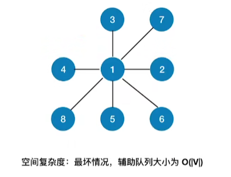
-
时间复杂度
-
邻接矩阵：
访问个顶点需要的时间；查找每个顶点的邻接点都需要的时间，总共有个顶点；
时间复杂度 =
-
邻接表：
访问个顶点需要的时间；查找每个顶点的邻接点都需要的时间；
时间复杂度 =
-
广度优先生成树和生成森林
广度优先生成树由广度遍历的过程确定的。
同一个图的邻接矩阵存储表示是唯一的，故其广度优先生成树也是唯一的，但由于邻接表存储表示不唯一，故其广度优先生成树也是不唯一的。
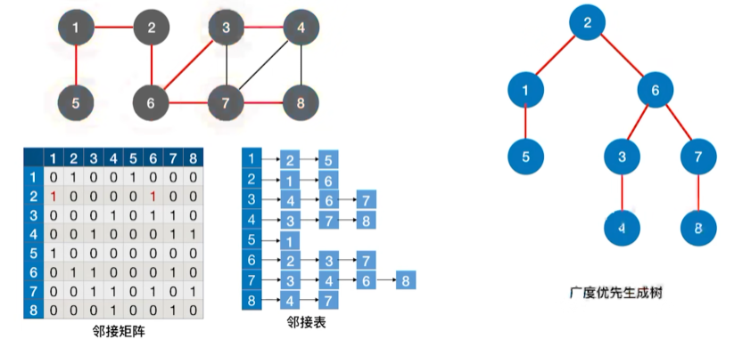
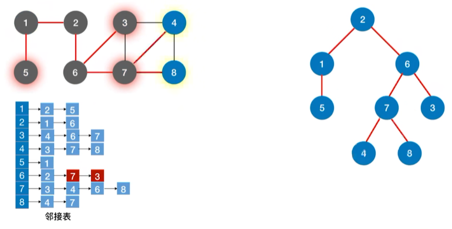
对非连通图或者只执行一次 BFS 无法遍历全部结点的图进行广度优先遍历，可得到广度优先生成森林。
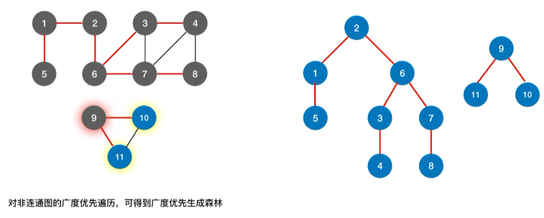
深度优先遍历(DFS)
Depth-First-Search，DFS
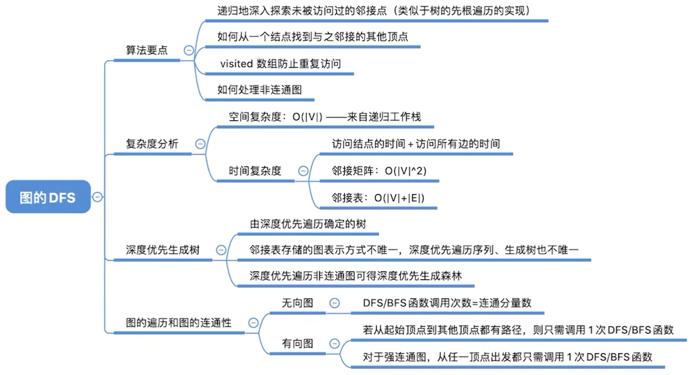
定义
类似于树的先序遍历。
基本思想如下：首先访问图中某一起始顶点，然后由出发，访问与邻接且未被访问的任意一个顶点，再访问与邻接且未被访问的任意一个顶点，重复上述过程。当不能再继续向下访问时，依次退回到最近被访问的顶点，若它还有邻接顶点未被访问过，则从该点开始继续上述搜索过程，直至图中所有顶点均被访问过为止。
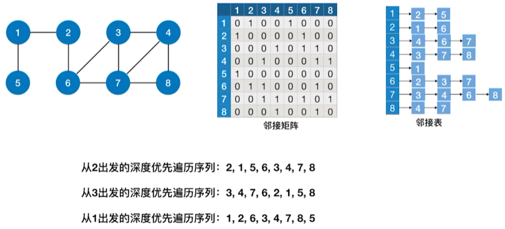
图的邻接矩阵表示是唯一的，但对于邻接表来说，若边的输入次序不同，生成的邻接表也不同。因此，对于同样一个图，基于邻接矩阵的遍历所得到的 DFS 序列和 BFS 序列是唯一的，基于邻接表的遍历所得到的 DFS 序列和 BFS 序列是不唯一的。
实现
#define MaxVertexNum 100
bool visited[MaxVertexNum];// 访问标记数组，初始值为false
void DFS(Graph G, int v) {// 从顶点v出发，深度优先遍历图G
visit(v); //访问初始顶点v
visited[v] = true; // 标记为已访问
for (int w = FirstNeighbor(G, v); w >= 0; w = NextNeighbor(G, v, w)) {
if (!visited[w]) {// w为v尚未访问的邻接顶点
DFS(G, w);
}
}
}与广度优先遍历一样，如果是非连通图，只执行一次遍历是无法遍历完所有结点的
#define MaxVertexNum 100
bool visited[MaxVertexNum];// 访问标记数组，初始值为false
void DFS(Graph G, int v) {// 从顶点v出发，深度优先遍历图G
visit(v); //访问初始顶点v
visited[v] = true; // 标记为已访问
for (int w = FirstNeighbor(G, v); w >= 0; w = NextNeighbor(G, v, w)) {
if (!visited[w]) {// w为v尚未访问的邻接顶点
DFS(G, w);
}
}
}
void DFSTraverse(Graph G) {// 对图G进行深度优先遍历
for (int i = 0; i < G.vexnum; i++) {
visited[i] = false;// 访问标记数组初始化
}
for (int i = 0; i < G.vexnum; i++) {
if (!visited[i]) {
DFS(G, i);
}
}
}复杂度
-
空间复杂度
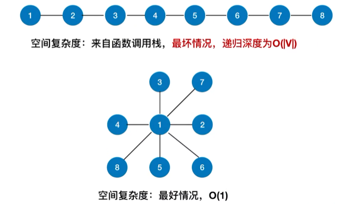
-
时间复杂度
时间复杂度 = 访问各结点所需的时间 + 探索各边所需的时间
-
邻接矩阵：
访问个顶点需要的时间；查找每个顶点的邻接点都需要的时间，总共有个顶点；
时间复杂度 =
-
邻接表：
访问个顶点需要的时间；查找每个顶点的邻接点都需要的时间；
时间复杂度 =
时间复杂度与广度优先遍历序列的时间复杂度一样
-
深度优先的生成树和生成森林
与广度优先搜索一样，深度优先搜索也会产生一棵深度优先生成树。
与广度优先遍历类似，对只执行一次 DFS 无法遍历全部结点的图进行深度优先搜索，那生成的就是深度优先生成森林。相关内容可查看图的连通性。
Tip
- 同一个图的邻接矩阵表示方式唯一，因此深度优先遍历序列唯一，深度优先生成树也唯一
- 同一个图的邻接表表示方式不唯一，因此深度优先遍历序列不唯一，深度优先生成树也不唯一
遍历可视化
图的连通性
-
对于无向图进行 BFS/DFS 遍历，调用 BFS/DFS 函数的次数 = 连通分量数。
- 若该无向图是连通图，只需调用 1 次BFS/DFS。
-
对于有向图进行 BFS/DFS 遍历，调用 BFS/DFS 函数的次数需要具体分析
-
若起始顶点到其它各顶点都有路径，则只需调用 1 次 BFS/DFS；
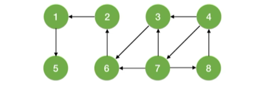
如图，若从 7 顶点开始遍历，遍历一次就可以遍历完全部结点；若从 2 结点开始遍历就需要遍历多次。
-
若该有向图是强连通图，从任一节点出发只需调用 1 次 BFS/DFS；
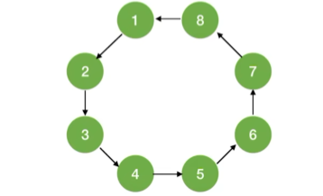
-
最小生成树（最小代价树）
定义
对于一个带权连通无向图 ，生成树不同，每棵树的权（即树中所有边上的权值之和）也可能不同。设 为 的所有生成树的集合，若 为 中边的权值之和最小的那棵生成树，则 称为 的最小生成树(Minimum-Spanning-Tree, MST)。
性质
- 当图 中的各边权值互不相等时， 的最小生成树是唯一的。
- 若无向连通图 的边数比顶点数少 1，即 本身是一棵树时，则 的最小生成树就是它本身。
- 最小生成树可能有多个，但边的权值之和总是唯一且最小的；
- 最小生成树的边数 = 顶点数 - 1。
Tip
在带权图 的最小生成树 中，某条边的权值可能会超过未选边的权值。
最小生成树中的 n-1 条边并不能保证是图中权值最小的 1 条边，因为权值最小的 n-1 条边并不一定能使图连通。在下图中，左图的最小生成树如下图所示，权值为 3 的边并不在其最小生成树中。
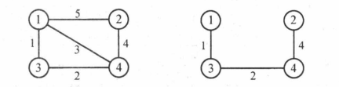
构造最小生成树
构造最小生成树有多种算法，但大多数算法都利用了最小生成树的下列性质：假设 是一个带权连通无向图， 是顶点集 的一个非空子集。若 是一条具有最小权值的边，其中 ，则必存在一棵包含边 的最小生成树。
基于该性质的最小生成树算法主要有 Prim 算法和 Kruskal 算法，它们都基于贪心算法的策略。
Prim 算法
从某一顶点开始构建生成树；每次将代价最小的新顶点纳入生成树，知道所有顶点都纳入为止。
Prim算法的时间复杂度为 ，不依赖于，因此，适合边稠密图。
Kruskal 算法
每次选择一条权值最小的边，使这条边的两头连通（如果原本已经连通就跳过）；直到所有结点都连通。
时间复杂度：，适合边稀疏图。
在Kruskal 算法中，最坏情况需要对IE条边各扫描一次。通常采用堆来存放边的集合，每次选择最小权值的边需要 的时间；每次使用并查集来快速判断两个顶点是否属于一个集合所需的时间为 ，的增长极其缓慢，可视为常数。算法的总时间复杂度为 ，不依赖于，因此 Kruskal 算法适合于边稀疏而顶点较多的图。
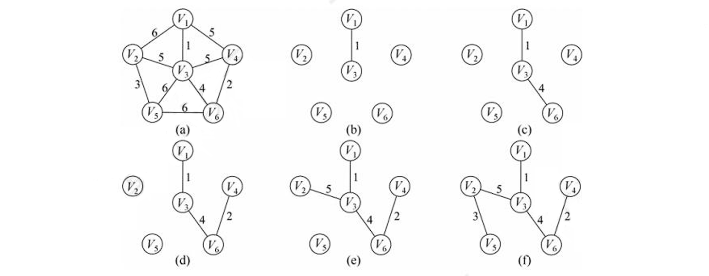
算法可视化
最短路径
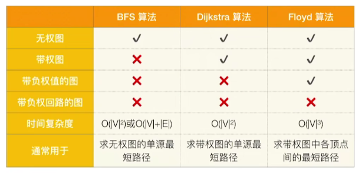
BFS 算法求解单源最短路径问题
Tip
BFS 算法求解单源最短路径只适用于无权图，或所有边权值都相同的图。
若图为非带权图，定义从顶点到顶点的最短路径为从到的任何路径中最少的边数；若从到没有通路，则。
使用 BFS 求解一个满足上述定义的非带权图的单源最短路径问题，这是由广度优先搜索总是按照距离由近到远来遍历图中每个顶点的性质决定的。
void BFS_MIN_Distance(Graph G, int u) {
int d[G.vexnum]; //d[i]表呆从u到i结点的最短路径
int path[G.vexnum]; // 最短路径从哪个顶点过来
for (int i = 0; i < G.vexnum; ++i) {
d[i] = INT_MAX; // 初始化路径长度
path[G.vexnum] = -1;
}
visited[u] = true;
d[u] = 0;
Enqueue(Q, u); // 顶点v入队列Q
while (!isEmpty(Q)) {
DeQueue(Q, u);
for (int w = FirstNeighbor(G, u); w >= 0; w = NextNeighbor(G, u, w)) {
if (!visited[w]) {// w为v尚未访问的邻接顶点
visited[w] = true;
d[w] = d[u] + 1;// 路径长度加1
path[w] = u; // 最短路径应从u到w
EnQueue(Q, w);// 顶点w入队列
}
}
}
}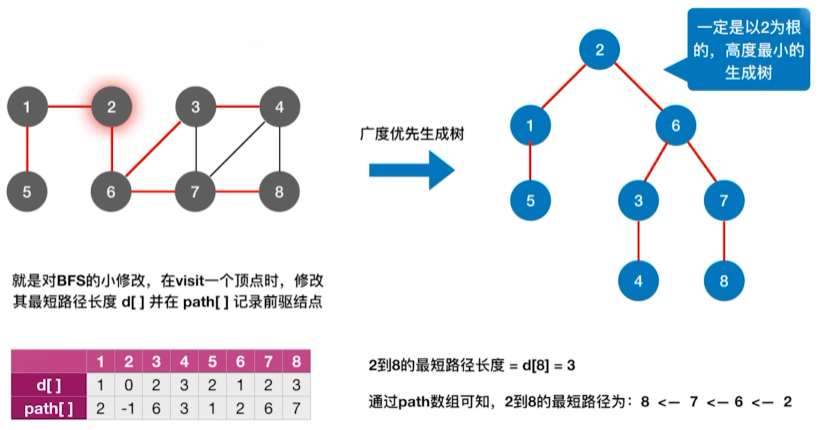
Dijkstra 算法求单源最短路径问题
Tip
Dijkstra 算法不适用于带有负权值的带权图。
Dijkstra 算法设置一个集合 记录己求得的最短路径的顶点，初始时把源点 放入 ，集合 每并入一个新顶点 ，都要修改源点 到集合 中顶点当前的最短路径长度。Dijkstra 算法也是基于贪心策略。
-
dist[]：记录从源点 到其他各顶点当前的最短路径长度，它的初态为：若从 到 有弧，则dist[i]为弧上的权值；否则置为 。 -
path[]：path[i]表示从源点到顶点 之间的最短路径的前驱结点。在算法结束时，可根据其值追溯得到源点 到顶点 的最短路径。
时间复杂度：使用邻接矩阵表示时，时间复杂度为 。使用带权的邻接表表示时，虽然修改dist[]的时间可以减少，但由于在dist[]中选择最小分量的时间不变，时间复杂度仍为 。
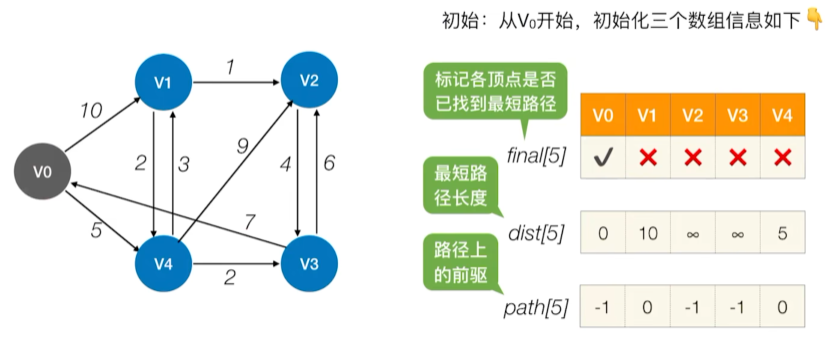
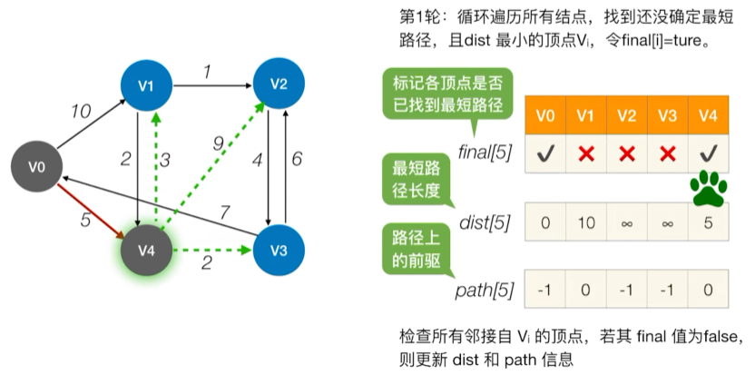
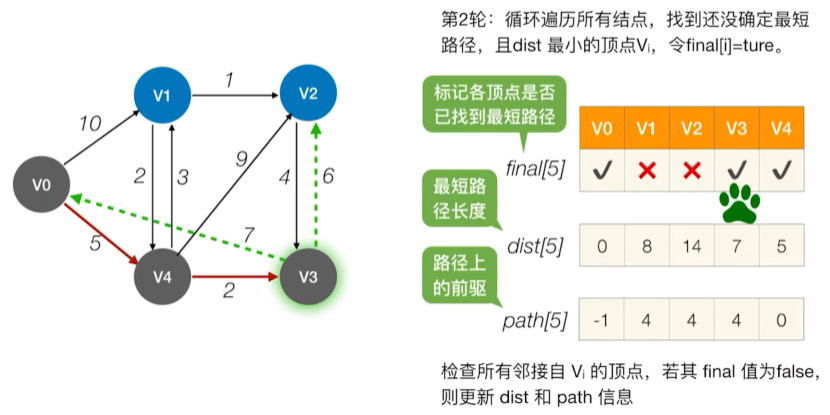
#include <climits>
// 从顶点v出发的最短路径
void Dijkstra(Graph G, int v) {
// 标记各顶点是否为已找到的最短路径
bool final[G.vexnum];
// 最短路径长度
int dist[G.vexnum];
// 路径上的前驱
int path[G.vexnum];
// 辅助数组初始化
for (int i = 0; i < G.vexnum; i++) {
final[i] = false;
dist[i] = INT_MAX;
path[i] = -1;
}
// 初始化顶点v，将该出发点加入到最短路径，出发点到出发点的最短距离为0
final[v] = true;
dist[v] = 0;
// 更新顶点v的邻接顶点的dist和path信息
for (int w = FirstNeighbor(G, v); w >= 0; w = NextNeighbor(G, v, w)) {
int edgeVal = Get_edge_value(G, v, w);
dist[w] = edgeVal;
path[w] = v;
}
// 主循环，由于出发结点v的final已经修改为true，因此执行G.vexnum - 1次即可
for (int i = 0; i < G.vexnum - 1; i++) {
// 寻找距离出发点最小的结点，即dist值最小的结点
int minNodeDist = INT_MAX, minNodeIndex = -1;
for (int j = 0; j < G.vexnum; j++) {
if (!final[j] && dist[j] < minNodeDist) {
minNodeIndex = j;
minNodeDist = dist[j];
}
}
// 将该结点标记为最短路径
final[minNodeIndex] = true;
// 遍历该结点的邻接结点，更新邻接结点的dist和path值
for (int w = FirstNeighbor(G, minNodeIndex); w >= 0; w = NextNeighbor(G, minNodeIndex, w)) {
// 计算从出发点到w的dist值
int newDist = Get_edge_value(G, minNodeIndex, w) + dist[minNodeIndex];
// 如果该新dist值小于w原来的dist值，则证明新的路径更加短
if (newDist < dist[w]) {
dist[w] = newDist;
path[w] = minNodeIndex;
}
}
}
}Floyd 算法求各顶点之间最短路径问题
如果要求出每一对顶点之间的最短路径，我们可以每次以一个顶点为源点，重复执行 Dijkstra 算法 n 次。时间复杂度为。但相比于 Floyd 算法会更麻烦。
Floyd 算法的基本思想是：递推产生一个 n 阶方阵序列 ，其中 表示从顶点到顶点的路径长度， 表示绕行第 个顶点的运算步骤。初始时，对于任意两个 顶点和，若它们之间存在边，则以此边上的权值作为它们之间的最短路径长度；若它们之间不存在有向边，则以 作为它们之间的最短路径长度。以后逐步尝试在原路径中加入顶点 作为中间顶点。若增加中间顶点后，得到的路径比原来的路径长度减少了，则以此新路径代替原路径。
Floyd 算法的时间复杂度为。不过由于其代码很紧凑，且并不包含其他复杂的数据结构，因此隐含的常数系数是很小的，即使对于中等规模的输入来说，它仍然是相当有效的。
Floyd 算法的空间复杂度为。
Floyd 算法允许图中有带负权值的边，但不允许有包含带负权值的边组成的回路。
定义一个阶方阵序列，其中
是从顶点到的中间顶点的序号不大于 1 的最短路径的长度；
是从顶点到的中间顶点的序号不大于 k 的最短路径的长度；
是从顶点到的最短路径的长度；
- 的矩阵就是图的邻接矩阵表示。
- 此时加入顶点，将顶点到的距离与到+到的距离和相比较，修改矩阵。此时矩阵的
A[i][j]的值就是到的最短路径。 - 此时加入顶点。注意现在的
A[i][j]的值不管是否经过都是最短路径，但这只是包含情况下的最短路径，现在新加入了则需要重新计算。将顶点到的距离与到+到的距离和相比较，修改矩阵。此时矩阵的A[i][j]的值就是到的最短路径。 - 加入顶点，……
- 重复加入顶点。
若图的顶点不止 3 个，求路径如下：
// 以 Vk 做为中转点
for (int k = 0; k < n; k++) {
// 遍历整个矩阵，i为行号，j为列号
for (int i = 0; i < n; i++) {
for (int j = 0; j < n; j++) {
// 以Vk为中转点的路径更短
if (A[i][j] > A[i][k] + A[k][j]) {
// 更新最短路径长度
A[i][j] = A[i][k] + A[k][j];
// 更新中转点
path[i][j] = k;
}
}
}
}有向无环图
有向无环图：若一个有向图中不存在环，则称为有向无环图，简称 DAG 图。
有向无环图是描述含有公共子式的表达式的有效工具。
例如表达式：
删除重复出现的子树，只保留一颗。这样可以节省存储空间。
Tip
有向无环图的拓扑序列唯一并不能唯一确定该图。
在下图所示的两个有向无环图中，拓扑序列都为 。
Tip
用有向无环图描述表达式(x + y)((x + y)/x)，需要的顶点个数至少是 5。
拓扑排序
A0V 网（Activity On Vertex Network，用顶点表示的网）：若用 DAG 图表示一个工程，其顶点表示活动，用有向边表示活动必须优先于活动进行的这样一种关系，则将这种有向图称为顶点表示活动的网络，记为 A0V 网。
拓扑排序：在图论中，由一个有向无环图的顶点组成的序列，当且仅当满足下列条件时，称为该图的一个拓扑排序：
- 每个顶点出现且只出现一次。
- 若顶点 A 在序列中排在顶点 B 的前面，则在图中不存在从顶点 B 到顶点 A 的路径。
每个 AOV 网都有一个或多个拓扑排序序列。
拓扑排序的实现：
- 从 AOV 网中选择一个没有前驱的顶点并输出。
- 从网中删除该顶点和所有以它为起点的有向边。
- 重复 ① 和 ② 直到当前的 AOV 网为空或当前网中不存在无前驱的顶点为止。后一种情况说明有向图中必然存在环。
时间复杂度：
- 采用邻接表存储：
- 采用邻接矩阵存储：
对一个 AOV 网，如果采用下列步骤进行排序，则称之为逆拓扑排序:
- 从 AOV 网中选择一个没有后继（出度为 0）的顶点并输出；
- 从网中删除该顶点和所有以它为终点的有向边；
- 重复 ① 和 ② 直到当前的 AOV 网为空；
Tip
若有向图的拓扑有序序列唯一，则图中每个顶点的入度和出度最多为 1。（❌）
下图的拓扑序列也是唯一的，但度却不满足条件。
关键路径
在带权有向图中，以顶点表示事件，以有向边表示活动，以边上的权值表示完成该活动的开销（如完成活动所需的时间），称之为用边表示活动的网络，简称 AOE 网(Activity On Edge NetWork)。
在 AOE 网中，有些活动是可以并行进行的。从源点到汇点的有向路径可能有多条，并且这些路径长度可能不同。完成不同路径上的活动所需的时间虽然不同，但是只有所有路径上的活动都己完成，整个工程才能算结束。
Tip
AOE 网和 AOV 网都是有向无环图，不同之处在于它们的边和顶点所代表的含义是不同的，AOE 网中的边有权值；而 AOV 网中的边无权值，仅表示顶点之间的前后关系。
AOE 网具有以下两个性质：
- 只有在某顶点所代表的事件发生后，从该顶点出发的各有向边所代表的活动才能开始；
- 只有在进入某顶点的各有向边所代表的活动都已结束时，该顶点所代表的事件才能发生。
在 AOE 网中
- 仅有一个入度为 0 的顶点，称为开始顶点（源点），它表示整个工程的开始；
- 仅有一个出度为 0 的顶点，称为结束顶点（汇点），它表示整个工程的结束；
从源点到汇点的所有路径中
- 关键路径：具有最大路径长度的路径
- 关键活动：关键路径上的活动
完成整个工程的最短时间就是关键路径的长度，即关键路径上各活动花费开销的总和。因为关键活动影响了整个工程的时间。若关键活动不能按时完成，则整个工程的完成时间就会延长。若关键活动的时间减少，则整个工程的完成时间就会缩短。当缩短到一定程度时，关键活动可能会变成非关键活动。
-
事件的最早发生时间：指从源点到顶点处的最长路径长度。
-
活动的最早开始时间：指该活动弧的起点所表示的事件的最早发生时间。
-
事件的最迟发生时间：指在不推迟整个工程完成的前提下，即保证它的后继事件在其最迟发生时间能够发生时，该事件最迟必须发生的时间。
-
活动的最迟开始时间：指该活动弧的终点所表示事件的最迟发生时间与该活动所需时间之差。
-
活动的时间余量：指该活动在不增加完成整个工程所需总时间的情况下，活动可以拖延的时间。活动的最迟开始时间和其最早开始时间的差额
Tip
求关键路径可以判断出一个有向图是否有环。
关键路径本身虽然不允许有环，但求关键路径的算法本身无法判断是否有环, 判断是否有环是求关键路径的第一步一一拓扑排序。
下图是一个有 10 个活动的 AOE 网，时间余量最大的活动是
活动的时间余量=结束顶点的最迟开始时间-开始顶点的最早开始时间-该活动的持续时间。
- 的时间余量=
- 的时间余量=
- 的时间余量=
- 的时间余量=
时间余量最大的活动是 g。